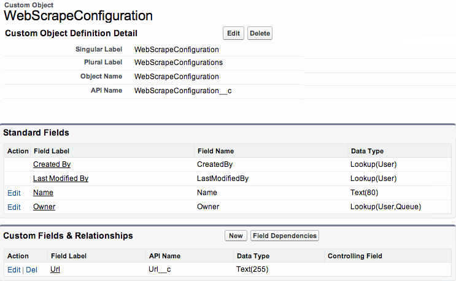
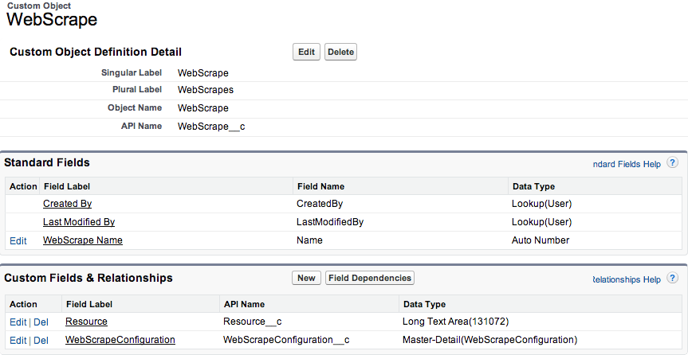
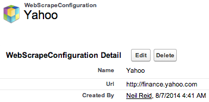

- Create the generic [ ] process - simulate engaging the services of a Force.com
developer by creating a new apex class and supporting SObjects.
-
To support the configuration of the
WebScrape process,
use the screenshot below to create the WebScrapeConfiguration SObject
( by clicking Setup|Create|Objects|New Custom Object )

-
To persist data scrapped from the web by the
WebScrape process
use the screenshot below to create the WebScrapeObject SObject
( by clicking Setup|Create|Objects|New Custom Object )

-
next, ...
- paste and save the following code :
- click Setup|Develop|Apex Classes|New
- paste and save the following code :
( Note: when saving, you will be prompted to create the default help file "WebScrapeHelp")
- global with sharing class WebScrape implements Process.Plugin {
-
- global class WebScrapeException extends Exception {}
-
- global class Meta {
- public String Icon = 'html';
-
global SObject ConfigObject = WebScrapeConfiguration__c.SObjectType.newSobject();
- public String DocsPageUrl = Url.getSalesforceBaseUrl().toExternalForm() + Page.WebScrapeHelp.getUrl();
- }
-
- global Process.PluginDescribeResult describe() {
- Process.PluginDescribeResult describeResult = new Process.PluginDescribeResult();
- describeResult.Name = 'WebScrape';
- describeResult.Description = 'Scrapes a web page.';
- describeResult.Tag = 'Example';
- return describeResult;
- }
-
- global Process.PluginResult invoke(Process.PluginRequest request) {
-
Map<String,Object> parameters = request.inputParameters;
-
-
- WebScrapeConfiguration__c configuration;
- String url;
- try {
-
configuration = (WebScrapeConfiguration__c)SalesforceObject.getById((Id)parameters.get('eda_ConfigObjectId'));
- url = configuration.Url__c;
- } catch (System.QueryException e) {
- throw new WebScrapeException('Unable to access WebScrapeConfiguration');
- }
-
-
- HttpRequest req = new HttpRequest();
- req.setEndpoint(url);
- req.setMethod('GET');
- Http http = new Http();
- HTTPResponse res = http.send(req);
- String data = res.getBody();
-
-
- WebScrape__c webScrape = new WebScrape__c( WebScrapeConfiguration__c = configuration.Id, Resource__c = data.left(130000));
- insert webScrape;
- parameters.put('Id', webScrape.Id);
-
- return EdaUtility.convert(new List<Map<String,Object>>{parameters});
- }
- }
-
- Create the yahoo finance [
 ] process - simulate engaging the services of a
Force.com developer by creating a new apex class. ] process - simulate engaging the services of a
Force.com developer by creating a new apex class.
-
- click
Setup|Develop|Apex Classes|New
- paste and save the following code :
( Note: when saving, you will be prompted to create the default help file "StockParseHelp")
- global with sharing class StockParse implements Process.Plugin {
-
- global class StockParseException extends Exception {}
-
- global class Meta {
- public String Icon = 'table_row_delete';
- public String DocsPageUrl = Url.getSalesforceBaseUrl().toExternalForm() + Page.StockParseHelp.getUrl();
- }
-
- global Process.PluginDescribeResult describe() {
- Process.PluginDescribeResult describeResult = new Process.PluginDescribeResult();
- describeResult.Name = 'StockParse';
- describeResult.Description = 'Extracts stock price from Yahoo Finance page content';
- describeResult.Tag = 'Example';
- describeResult.OutputParameters = new List<Process.PluginDescribeResult.OutputPArameter> {
- new Process.PluginDescribeResult.OutputParameter(
- 'myns_PriceData',
- 'Json representation stock of ticker price',
-
Process.PluginDescribeResult.ParameterType.String
- )
- };
- return describeResult;
- }
-
-
- global Process.PluginResult invoke(Process.PluginRequest request) {
-
Map<String,Object> parameters = request.inputParameters;
-
-
- Id dataId = (Id) parameters.get('Id');
-
List<WebScrape__c> webScrapes = [SELECT Resource__c FROM WebScrape__c WHERE Id = :dataId];
- if (webScrapes.size() == 0) {
- throw new StockParseException('Unable to load yahoo finance page content');
- }
- String data = webScrapes[0].Resource__c;
-
-
- data = data.replaceAll('\n','').replaceAll(' ','') ;
- String price = data.substringAfter('class="time_rtq_ticker">').substringBefore('</span>').substringAfter('>');
- String ticker = data.substringAfter('symbol=').substringBefore(';');
- data = '{"Stock__c": [ {"ticker__c": "'+ticker+'", "price__c": '+price+'} ] }';
-
-
-
- webScrapes[0].Resource__c = data;
- update webScrapes[0];
-
-
- parameters.put('myns_PriceData',data);
-
-
- return EdaUtility.convert(new List<Map<String,Object>>{parameters});
- }
- }
-
- Click on the list view of the
 tab. tab.
Click the  button so that the EDA framework discovers and registers the recently created [
] and [ ] processes. button so that the EDA framework discovers and registers the recently created [
] and [ ] processes.
( For futher details, refer to the Process Discovery Tutorial. )
- Set up a remote site for the Yahoo finance domain.
Cick Setup|Security Controls|RemoteSite Settings and enter the Remote Site URL [ http://finance.yahoo.com ]

- Create a new
Sequence.
Click the  application , select the application , select the  tab . tab .
Then click [ New ] and name the new sequence TestWebScrape.
Finally click [ Save ]
You will be presented with a new sequence that includes a default [  ] process. ] process.
- Add
steps to the sequence.
Click the  repeatedly : repeatedly :
- From the [  ] tab , select a [ ] tab , select a [  ] process and a [ ] process and a [  ] process
] process
- From the [  ] tab , select a [ ] process and a [ ] process. ] tab , select a [ ] process and a [ ] process.
- Arrange the
steps.
Using drag and drop, arrange the processing steps in the following order:

- Configure the
Schedule process.
Click the  link next to the [ ] process and set the schedule to fire four times during weekdays. link next to the [ ] process and set the schedule to fire four times during weekdays.
(Note : Care should be taken to align scheduled times with trading hours of the New York Stock Exchange after accounting for time zone differences of your organization)

Click
and exit the configure screen.
- Configure the
WebScrape process.
Click the link next to the [ ] process and set [ http://finance.yahoo.com/q?s=CRM ] as the endpoint on the [ ] configuration page.

Click
and exit the configure screen.
- Test the Sequence.
To test this sequence, enqueue a message by clicking the  button button
(Note : under production conditions, one or more polling messages will be enqueued as defined in the configuraton of the [ ] process.)
The [ ] process towards the end of the sequence will send an email to the
account associated with the user running the test.
The email body will contain the values of all message parameters at the point at which the [
] process performs the email transmission.
The formatted body should approximate the following.
- {
- "eda_Position" : 3,
- "eda_SequenceName" : "TestWebScrape",
- "Id" : "a0Lo0000001IO8LEAW",
- "myns_PriceData" : "{\"Stock__c\": [ {\"ticker__c\": \"CRM\", \"price__c\": 53.89} ] }",
- "eda_StackDepth" : 2,
- "eda_EntryPointGuid" : "0476b335a9ea3b994c",
- "eda_ConfigObjectId" : null
- }
Visually confirm the Sequence worked as expected by inspecting the myns_PriceData parameter injected into the message by the [ ] process.
|
 ]
] ] process towards the end
of the sequence and arrange the processing steps in the following order:
] process towards the end
of the sequence and arrange the processing steps in the following order:
 ]
] button on the
button on the  button
button